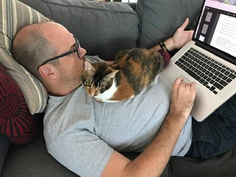
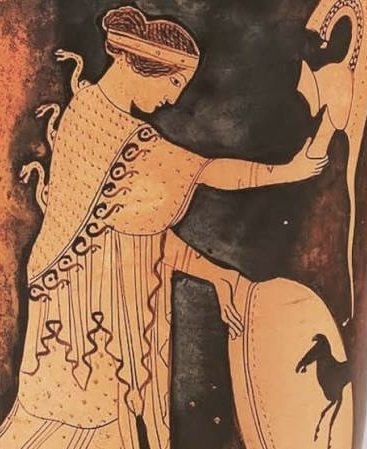
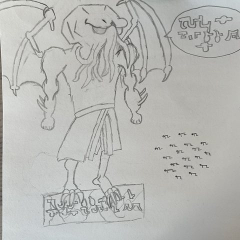
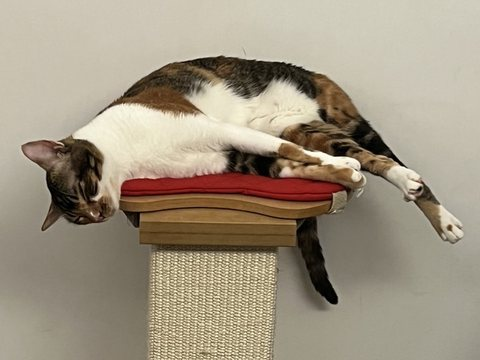

Associate Professor of Philosophy · Frankfurt School of Finance & Management
My research has been a series of attempts to make sense of the possibility of normative thought. I am still working on it. It has led to explorations of expressivism and quasirealism, and more recently, of radical normative pluralism. Earlier work deals with the nature of desire and self-knowledge.
I also have research interests in social and political epistemology, and I am working on papers exploring what classical ideas of virtue and personal well-being should look like once we realize that human rationality is bounded.
I find all of philosophy interesting, and so I like teaching on just about any topic that isn't too technical.
I am currently an Associate Professor in the Computational Science and Philosophy Department at Frankfurt School of Finance and Management; prior to that I lived in Hong Kong, where I taught for 13 years at Lingnan University.
This website was made by Claude with some instructions from me. I believe any part of our lives that involves processing information should now be ambitious and elaborate to a degree that would have been silly before. The website is intended as a tiny example of that.
Metaethics · Moral Psychology · Social Epistemology

Journal Articles & Book Chapters
-
Mandatory Retirement and Arbitrary PowerIn Is Mandatory Retirement Morally Defensible? Ethics, Economics, and Law in Ageing Societies, H.L. Li (ed.), Routledge (forthcoming)
-
Handling Rejection (with Jack Woods)Philosophical Studies 180 (2023): 159–90
-
Deflating the Many Attitudes ProblemPhilosophical Quarterly 72 (2022): 1–18
-
If You’re Quasi-Explaining, You’re Quasi-LosingOxford Studies in Metaethics 16, R. Shafer-Landau (ed.), Oxford University Press (2022): 54–80
-
Quasirealism as Semantic DispensabilityPhilosophical Studies 178 (2021): 2313–33
-
Skepticism about Ought SimpliciterOxford Studies in Metaethics 13, R. Shafer-Landau (ed.), Oxford University Press (2018): 230–52
-
Expression and Guidance in Schroeder’s Expressivist SemanticsErkenntnis 83 (2018): 829–52
-
The Varieties of NormativityIn The Routledge Handbook of Metaethics, T. McPherson and D. Plunkett (eds.), Routledge (2017): 567–81
-
The Verdictive Organization of DesireCanadian Journal of Philosophy 47 (2017): 589–612
-
Deliberators Must Be ImperfectPhilosophy and Phenomenological Research 93 (2016): 321–47
-
Intuitions about Disagreement Do Not Support the Normativity of Meaningdialectica 70 (2016): 65–84
-
On Rationally Valuing One’s LifeSpecial issue of Asian Bioethics Review, B. Steinbock (ed.), 8 (2016): 1–16
-
Why Transparency Undermines EconomySynthese 192 (2015): 3037–50
-
Akrasia and the Problem of the Unity of ReasonRatio 28 (2015): 65–80
-
How Expressivists Can and Should Explain Inconsistency (with Jack Woods)Ethics 125 (2015): 391–424Topic of an online symposium at PEA Soup, with a critical précis by Mark Schroeder.
-
The Abductive Case for Humeanism over Quasi-Perceptual Theories of DesireJournal of Ethics and Social Philosophy 8 (2014): 1–29
-
Knowing Yourself—and Giving Up on Your Own Agency in the ProcessAustralasian Journal of Philosophy 90 (2012): 641–56
-
Ambivalent Desires and the Problem with ReductionPhilosophical Studies 150 (2010): 37–47
Discussion Notes
-
Comments on Victor Tadros’s “Treatment and Accountability”In Lanson Lectures in Bioethics (2016–2022): Assisted Suicide, Responsibility, and Pandemic Ethics, H.L. Li (ed.), Palgrave Macmillan (2024): 159–68
Book Reviews
-
Social Goodness: The Ontology of Social Norms, by Charlotte WittJournal of Moral Philosophy 23 (2026): 535–38
-
Free Will and Action Explanation, by Scott SehonAustralasian Journal of Philosophy 96 (2018): 411–13
-
Motivational Internalism, eds. G. Björnsson, C. Strandberg, R. Francén Olinder, J. Eriksson, and F. BjörklundAustralasian Journal of Philosophy 94 (2016): 814–16
Management, Philosophy & Economics · Applied Data Science

My teaching is primarily within Frankfurt School’s Management, Philosophy and Economics programme. Below are some recent and upcoming courses:
Summer Semester 2026
- Politics, Justice and the State
- Independent Research Project
Winter Semester 2026/27
- Current Topics in Practical Philosophy
Summer Semester 2027 (planned)
- Current Topics in Theoretical Philosophy
- Politics, Justice and the State
I also teach in the Master in Applied Data Science programme:
Summer Semester 2026
- AI and Humanity: Ethics of Data Science
Summer Semester 2027 (planned)
- AI and Humanity: Ethics of Data Science
DBake Squared · A Substack with Dave Baker


Outside of philosophy, I have a Substack with Dave Baker, DBake Squared. It was originally planned as a discussion of science fiction. Then real life became science fiction, so we (primarily I) began contributing to the Discourse. There is probably some lower level of Hell waiting for me as punishment.
For those who like good things, here’s the first part of my four-part essay on Dune (I don’t care if you think it is too long; filling Substack with two-thousand-word essays because those get more engagement is the slopification of our culture, not AI).
For another good thing, here’s Dave’s discussion of AI consciousness.
For weirdos who think that the world has been made better by thwarted intellectuals and autodidacts with an unusual talent for self-branding ranting about how the world is supposed to work, my personal Time Cube can be found here.
I plan to write something good again soon. I promise.
Get in Touch
The best way to reach me is by email.
Impressum · Legal Notice
Prof. Derek BakerComputational Science and Philosophy Department
Frankfurt School of Finance and Management
Adickesallee 32–34
60322 Frankfurt am Main
This site has no cookies and currently collects no analytics. Any views expressed here are my own and do not reflect those of my employer.
This site is hosted on GitHub Pages, a service of GitHub, Inc. When you visit it, GitHub logs and stores your IP address for security purposes. For details, see GitHub’s privacy statement.